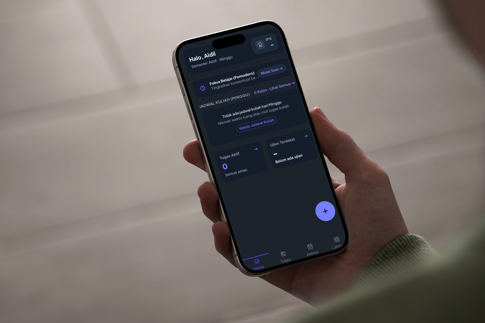
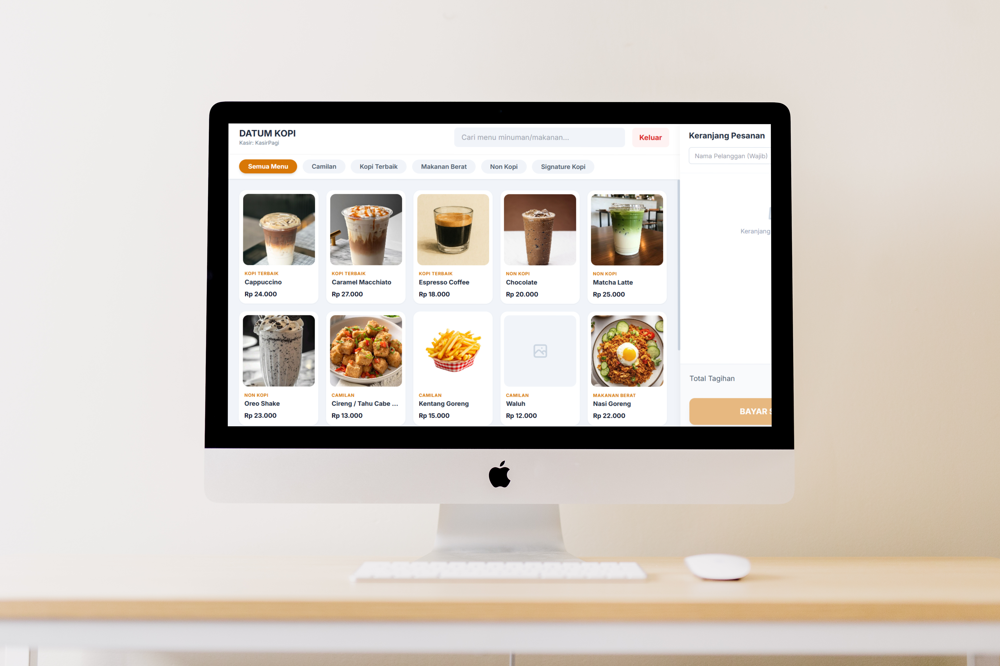

CampusMate
Aplikasi Mobile yang membantu pelajar atau mahasiswa mengelola jadwal, tugas, catatan, dan arsip akademik.
JavaScript
Capacitor
Supabase
Informatics Student Universitas Perjuangan Tasikmalaya
Saya membangun aplikasi web yang fungsional dan rapi sambil terus belajar praktik pengembangan perangkat lunak modern, mulai dari front-end hingga back-end.
Sedikit cerita tentang latar belakang dan apa yang saya kerjakan sehari-hari.
Saya adalah mahasiswa Teknik Informatika di Universitas Perjuangan Tasikmalaya yang berfokus pada pengembangan aplikasi berbasis web dan mobile.
Teknologi dan tools yang saya gunakan untuk membangun sebuah produk digital.
Beberapa proyek yang pernah saya kerjakan, baik individu maupun tim.

Aplikasi Mobile yang membantu pelajar atau mahasiswa mengelola jadwal, tugas, catatan, dan arsip akademik.

Aplikasi kasir berbasis web untuk membantu proses transaksi penjualan, pengelolaan produk, stok barang, serta pencatatan riwayat transaksi secara terstruktur.
Saya terbuka untuk peluang magang, proyek kolaborasi, maupun sekadar berdiskusi seputar teknologi. Jangan ragu untuk menghubungi saya melalui kanal di bawah ini.